Western Australia - My thoughts
I'm just coming back from a two-week trip to Singapore, Western Australia, and Malaysia, and during the long bus ride, I decided to share my thoughts and the information I gathered during the eight days my friends and I spent in Australia.
We flew to Perth, where we rented a car - a standard SUV without 4x4 drive, but it was absolutely sufficient for everything we had planned. We couldn't drive on 4x4 roads, but all the main routes were paved, and we had no trouble getting anywhere. Moreover, it was more than half the price of a 4x4 vehicle ($750 instead of $2,500) and consumed less fuel. We planned to sleep in the car and tents. It was a road trip at the turn of February and March, and we aimed to reach Coral Bay in eight days, stopping at Monkey Mia and Kalbarri NP along the way. The total distance was 3,300 km, and we managed it with time to spare (we even got to spend nearly three days in Coral Bay). We tried to avoid driving at night due to the high risk of hitting kangaroos or other animals (honestly, we saw more dead kangaroos on the roadside than living ones).
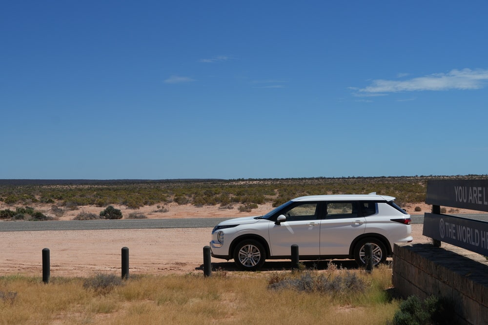 Our car
Kalbarri National Park
As for the attractions, Kalbarri NP costs 17 AUD and is a very beautiful place. A river flows through it, along which there are many fantastic hiking trails. If you have time, it's worth arriving early in the morning and hiking all day because the trails are breathtaking. There's also a huge balcony offering a view of the entire valley. Unfortunately, it's also brutally hot there, so it's wise to choose the season carefully - temperatures can reach up to 50 degrees Celsius (we experienced 48), and there are a terrifying number of flies that are nearly impossible to tolerate.
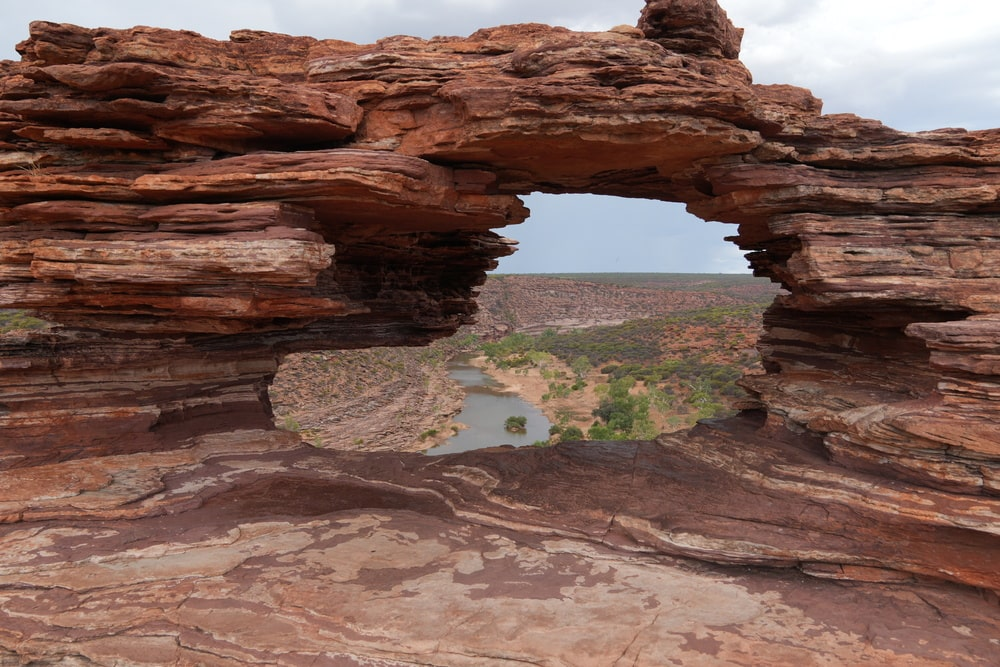 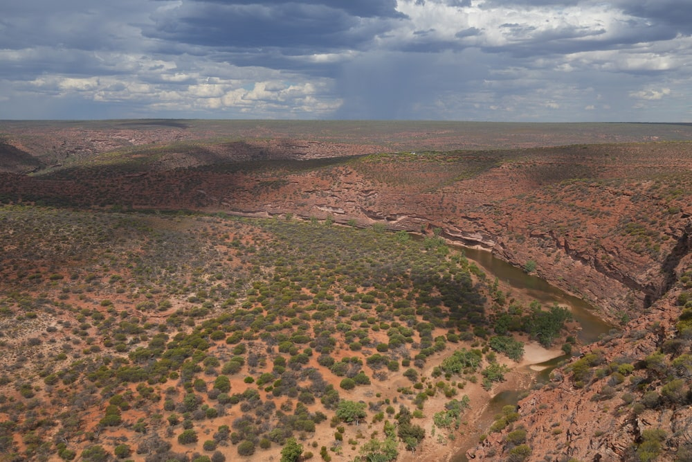 Kalbarri National Park
Monkey Mia
Monkey Mia (along with Coral Bay) is considered by many locals to be among the best beaches along the entire coast. It is located on a Shark Bay Marine Park and it's a World Heritage Site. On the way to the main town you can stop at multiple interesting spots (viewpoints and beaches). I recommend Shells beach - beautiful white beach with shallow sky-blue water. An entry to Monkey Mia costs 17 AUD. There's a resort there where you can stay, and a beach. The water has no reef or many fish, but every morning, there's a dolphin feeding session where the dolphins come into ankle-deep water (participation is included in the ticket price). Additionally, there's a resident pelican and a few emus that hang out on the beach. Just 25 km from Monkey Mia, there's a regular town with more accommodations, shops, and a gas station.
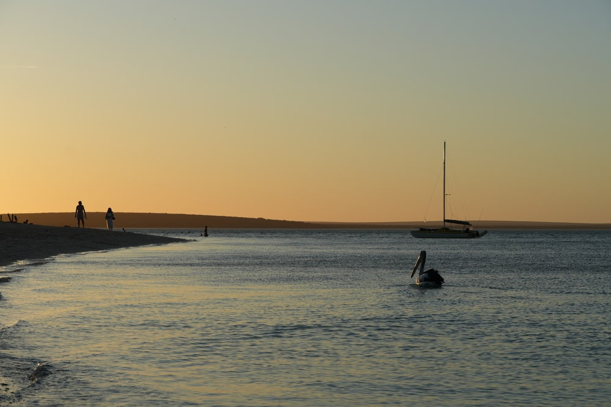 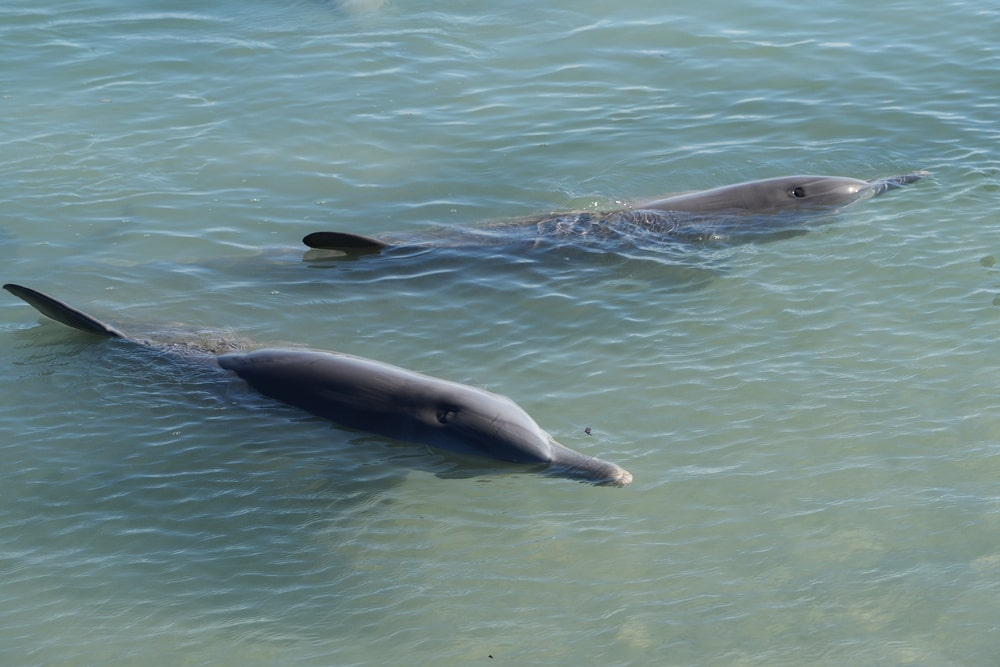 Monkey Mia
Coral Bay
Coral Bay is a true gem - a very authentic place full of locals. It's quite touristy, but most visitors are Australians. It's an excellent spot for backpackers looking for casual work. There's even a great hostel for travelers like that. The town is situated on the Ningaloo Reef - a stunning coral reef full of beautiful marine life. Many people say it's even better than the Great Barrier Reef because it's better protected and more compact. March is the season for whale sharks, other months bring humpbacks, and you can see beautiful manta rays all year round. There are also plenty of turtles, sharks, octopuses, rays, and other creatures, many of which you can see from the shore. If someone doesn't want to pay for snorkeling tours, I recommend walking an hour to Five Fingers Beach. There's practically no one there, and the reef near the shore is almost the same as on paid tours - just swim 10 meters from the shore to experience turtles and sharks. The town center has many hotels and campgrounds. The main beach is very nice, with shallow water for lounging and deeper sections with a bit of coral reef. I highly recommend it. The distance from Perth to Coral Bay is about 1,000 km, and while it can be done in one day, it would be quite exhausting.
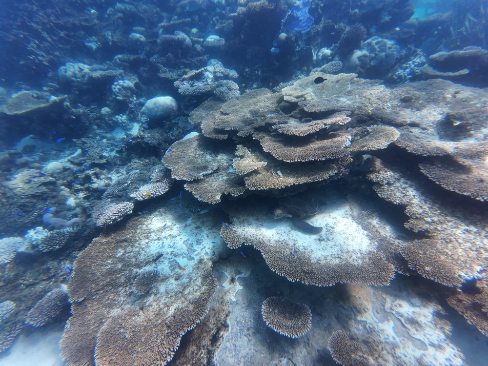 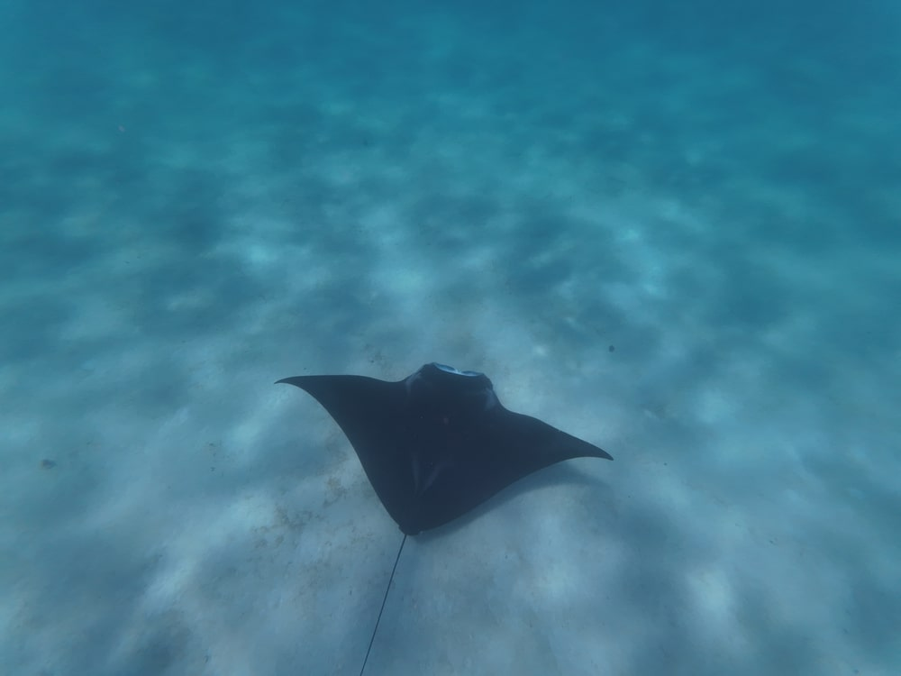 Ningaloo Reef
Nambung National Park
Relatively close to Perth there's Nambung NP. It's the only place where we saw kangaroos up close during the day. The best thing you can see there are 'The Pinnacles'. The Pinnacles are those weirdly shaped rocks that are scattered all over the place there. Combined with a very vibrant yellow sand it created a very unusuall view. Definetaly a spot to check on your way to the North. In Nambung there's also a beach called 'Kangaroo Point'. A Ranger that we met told us to visit this spot if we want to see many kangaroos, but we haven't got time :/
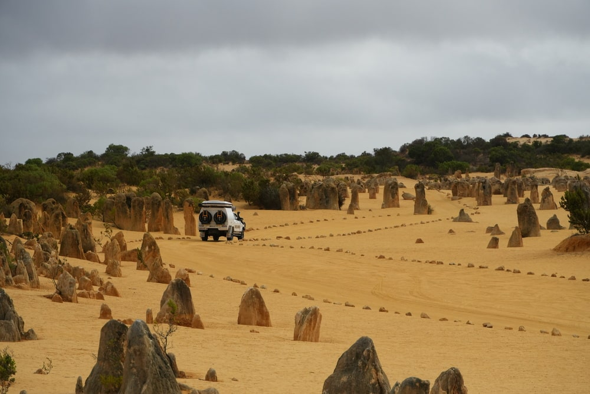 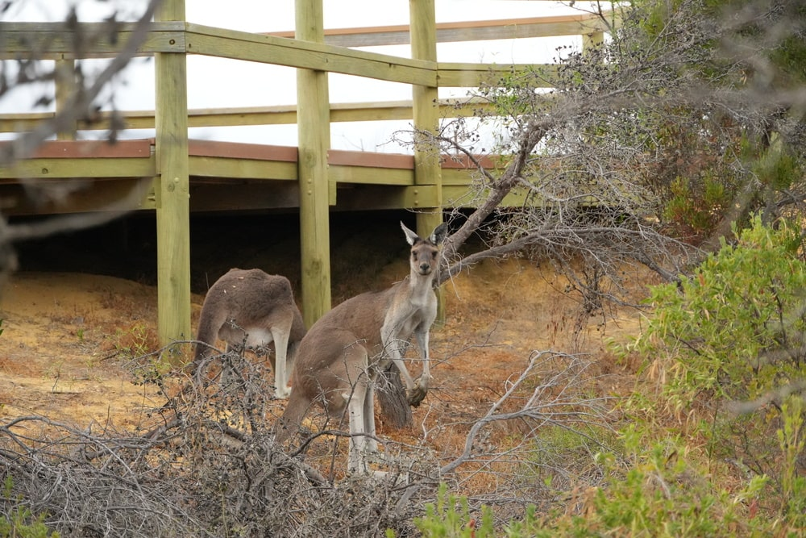 Nambung National Park
Perth
We spent only a few hours in Perth, but it made a really good impression on us. Most of our time was spent in Kings Park, and honestly, it's the kind of place that makes you consider living in the city. There's a wonderful botanical garden, monuments, fountains, and a variety of bird species. They also offer free guided tours. An amazing place.
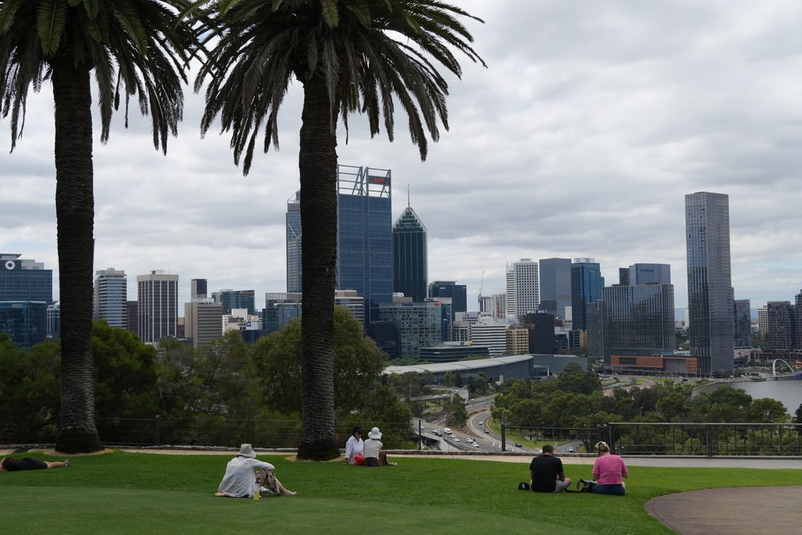 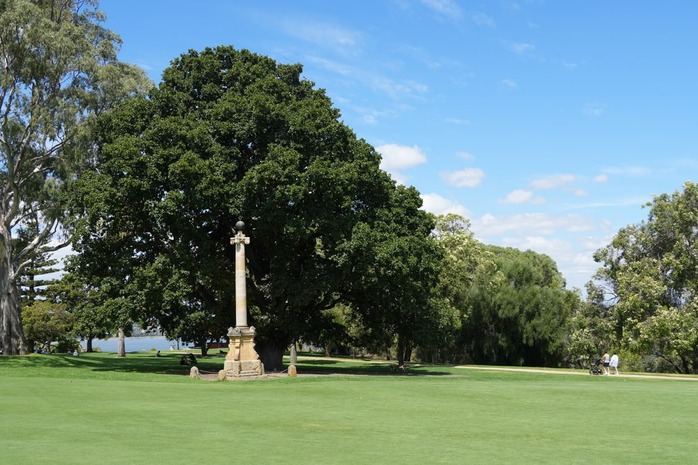 King's Park, Perth
Regarding the road itself, you drive through a decent outback - you can really feel that Australian emptiness. I highly recommend the gas station in Billabong - great vibe. Along the way, we hardly saw any kangaroos, which surprised us a bit. The road is super straightforward, paved, and gas stations are at most 150 km apart. Choose your travel month wisely - we were there at the end of February and early March, and daily temperatures reached 44-48 degrees Celsius. The nights were even worse, with temperatures of 35 degrees making it impossible to sleep. When we stayed at rest spots by the road, there were swarms of insects. Generally, the best way to survive these temperatures is either driving with air conditioning or beach lounging (make sure to bring liters of sunscreen).
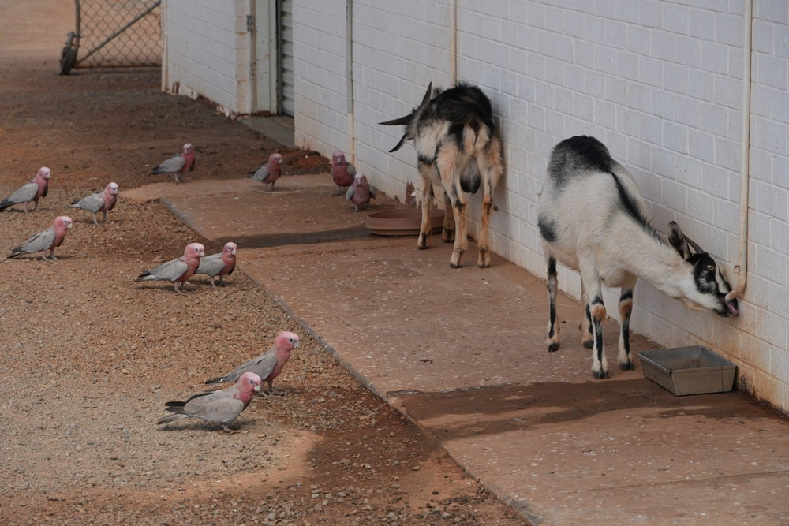 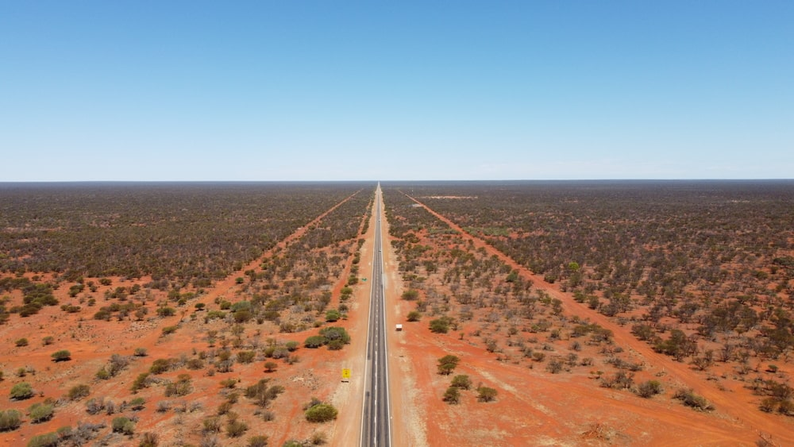 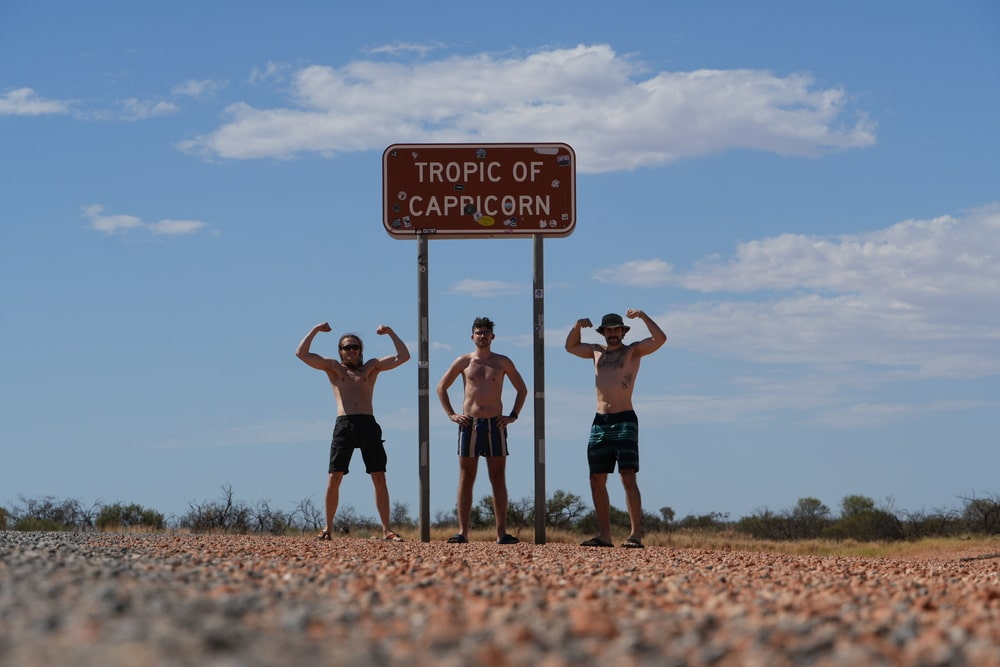 1) Billabong Gas Station 2) Road 3) Tropic of Capricorn
Overall, we believe we made the best decision to head north from Perth. Several locals confirmed this, saying that the south is mainly wine country, and after all, “you can drink wine anywhere.” The south also has some interesting forests and caves, but it can't compete with the north. I think I can wholeheartedly recommend the Northwest of Australia to anyone. It was a great fun.
Peace, Jakub
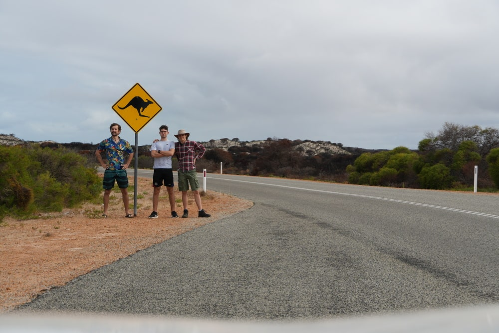